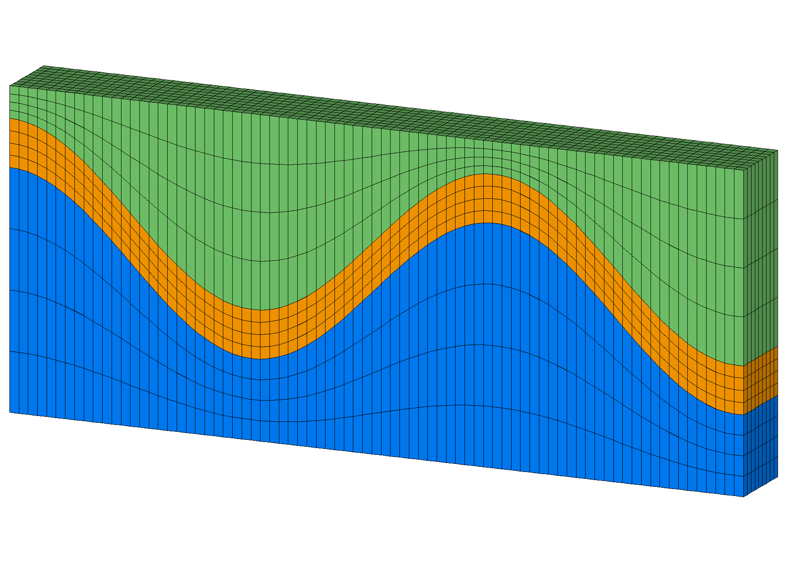
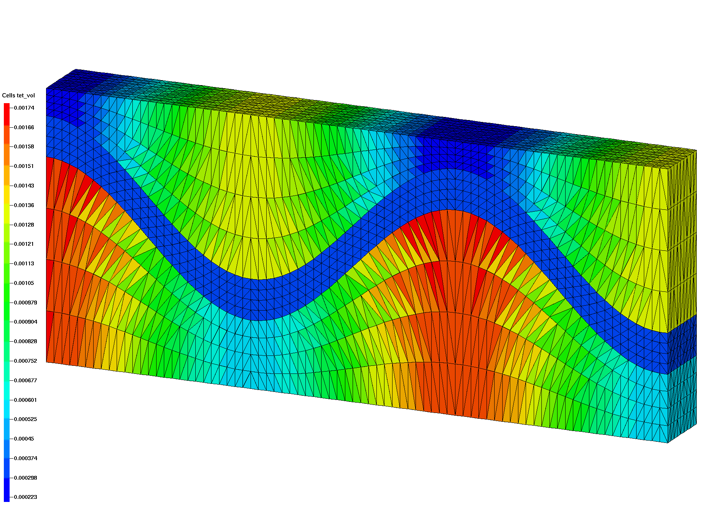
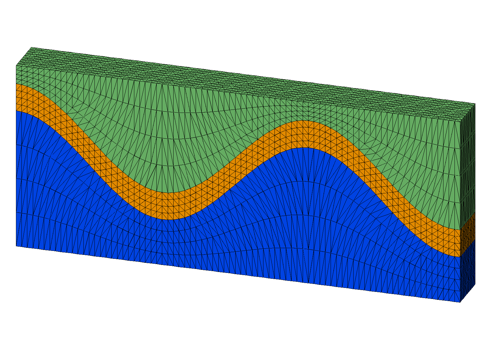
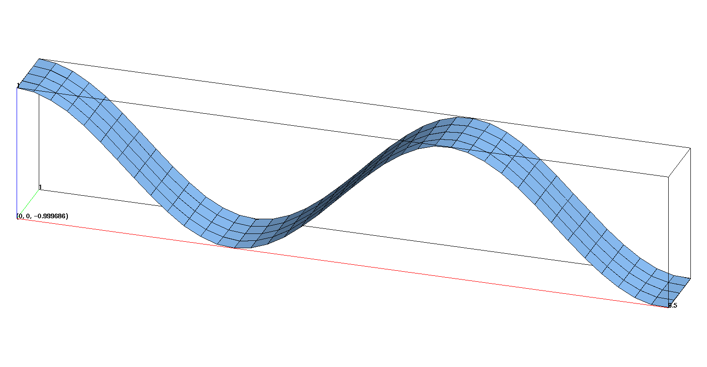
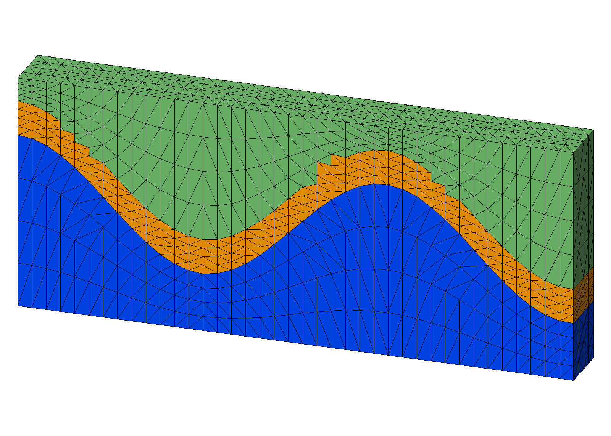
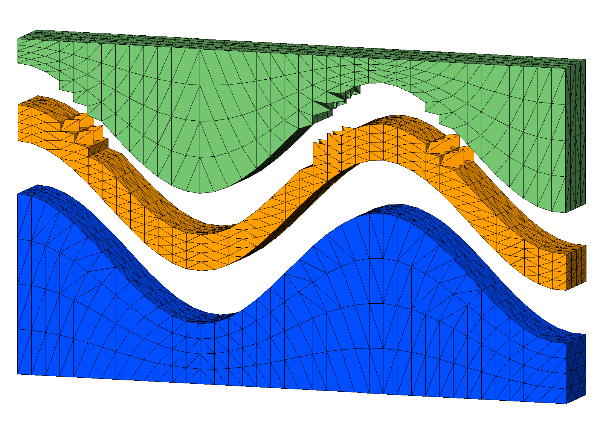
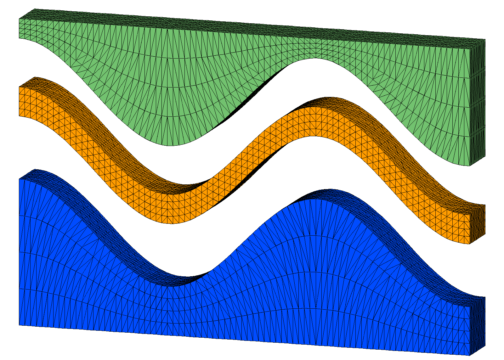

connect with input points from a convex hex mesh created with stack/layers.
This example has a thin layer formed from sloped internal interfaces. Bad elements are created across the internal interfaces resulting in “popped” tets.
This example is fixed with resolution that improves the height to width ratio of the mesh spacing.
 Step 2. Stack surfaces into hex mesh
 Step 3. Connect points into tetrahedral mesh
 Step 4. Interpolate hex colors to tet mesh
Use the define command to set parameters for mesh resolution and file names. Here the resolution is redefined by setting the define variables to new values. The first set are those associated with hex.gmv and tet.gmv. The second set doubles the resolution and assigns new file names hex2.gmv and tet2.gmv.
This example takes advantage of the define command to run variations on the mesh using a single input file. Notice the first set of defined variables are for the coarse mesh, the second set overwrites the first set to create a mesh with added refinement and new file names.LaGriT is run first with the coarser mesh, then re-run with the modified values that fix the popped tets at the interface.
# Use x coordinates to compute z based on cos() # z(i)=cos(x(i)) # EDIT Variables to define resolution and file names # spacing near .25 horizontal define / XMAX / 9.5 define / YMAX / 1. define / NX / 40 define / NY / 5 define HEX_MESH hex.gmv define TET_MESH tet.gmv # MODIFY Variables to fix popped tets on interface # ADD resolution so height to width ratio is near 1 to 2 # spacing near .125 horizontal define / NX / 80 define / NY / 10 define HEX_MESH hex2.gmv define TET_MESH tet2.gmv # Create the quad surface with wave topology cmo / create / mosurf / / / quad quadxy /NX NY/0. 0. 0./ XMAX 0. 0./XMAX YMAX 0./0. YMAX 0./ 1 1 1 createpts/brick/xyz/NX,NY,1/1 0 0 / connect cmo / setatt / mosurf / imt / 1 0 0 / 1 cmo / setatt / mosurf / itetclr / 1 0 0 / 1 resetpts / itp cmo / printatt / mosurf / -xyz- / minmax math/cos/mosurf/zic/1,0,0/mosurf/xic cmo / printatt / mosurf / -xyz- / minmax dump / surf_wave.inp / mosurf #------------------------------------------------- # make surfaces for stack input files using the quad surface # Make top and bottom surfaces flat define ZBOT 0. define ZTOP 4. # translate surfaces for vertical thickness define S1 2. define S2 .6 define S3 1.5 cmo select mosurf trans /1,0,0/ 0. 0. 0./ 0. 0. S1 dump / surf_wave_low.inp / mosurf trans /1,0,0/ 0. 0. 0./ 0. 0. S2 dump / surf_wave_high.inp / mosurf cmo/setatt/mosurf/ zic/ ZBOT dump / surf_flat_bot.inp / mosurf cmo/setatt/mosurf/ zic/ ZTOP dump / surf_flat_top.inp / mosurf
Use the quad surface to assign Z values for layers to stack. The top and bottom of this mesh will be flat. There are 2 wave surfaces being used as internal interfaces for the middle material given a thickness of .6 using the translate command.
# Make top and bottom surfaces flat define ZBOT 0. define ZTOP 4. # translate surfaces for vertical thickness define S1 2. define S2 .6 cmo select mosurf trans /1,0,0/ 0. 0. 0./ 0. 0. S1 dump / surf_wave_low.inp / mosurf trans /1,0,0/ 0. 0. 0./ 0. 0. S2 dump / surf_wave_high.inp / mosurf cmo/setatt/mosurf/ zic/ ZBOT dump / surf_flat_bot.inp / mosurf cmo/setatt/mosurf/ zic/ ZTOP dump / surf_flat_top.inp / mosurf
Created quad surface with z(i)=cos(x(i))
This surface is used as template to create additional surfaces.

The stack/layers command reads the four surfaces that were created. Material ids are assigned and refinement layers created between input surfaces that will detirmine vertical resolution.
# Stack layers from bottom to top # Define material id and add refine layers cmo/create/mo_stack stack/layers/avs/ & surf_flat_bot.inp 1 & surf_wave_low.inp 2 3 & surf_wave_high.inp 3 3 & surf_flat_top.inp 3 3 dump gmv tmp_stack_layers.gmv mo_stack # connect statcked surfaces into 3D elements stack/fill/mohex / mo_stack resetpts/itp # write information about this mesh object cmo/printatt/mohex/-xyz- minmax quality # check hex volumes cmo/addatt/mohex/volume hex_vol cmo/printatt/mohex/hex_vol minmax eltset/ ebad / hex_vol/le 0. dump HEX_MESH mohex
For this example there are flat top and bottom layers plus 2 internal layers to seperate materials. The vertical spacing between these input layers are refined proportionally by adding refine layers.
surface name layer color type llcorner zic
surf_flat_bot.inp 1 1 -1 1) 0.000000E+00
refine 2 1 2 801) 7.500000E-01
refine 3 1 2 1601) 1.500000E+00
refine 4 1 2 2401) 2.250000E+00
surf_wave_low.inp 5 2 0 3201) 3.000000E+00
refine 6 2 2 4001) 3.150000E+00
refine 7 2 2 4801) 3.300000E+00
refine 8 2 2 5601) 3.450000E+00
surf_wave_high.inp 9 3 0 6401) 3.600000E+00
refine 10 3 2 7201) 3.700000E+00
refine 11 3 2 8001) 3.800000E+00
refine 12 3 2 8801) 3.900000E+00
surf_flat_top.inp 13 3 -2 9601) 4.000000E+00
Elements per layer: 711 stacked total: 9243
Nodes per layer: 800 stacked total: 10400
No Truncating layer specified.
files read: 4 from total: 4
The stacked layers are connected into hex elements. Note the vertical resolution for the coarse and the high resolution 2nd mesh are the same. Only the horizontal spacing has changed.
The quality and cmo/addatt/cmo/volume commands are used to check that volumes are positive.
Hex Mesh Coarse XY Hex Mesh Refine XY
Copy the hex points into a new mesh object and connect into tetrahedrals.
cmo/create/motet copypts/motet/mohex # set some defaults for the connect routine filter / 1 0 0 rmpoint / compress cmo / setatt / motet / imt / 1 0 0 / 1 cmo / setatt / motet / itp / 1 0 0 / 0 # connect and ignore interface materials connect/ noadd
The internal interfaces are steep slopes, if the width to height ratio is too large, connect may form connections across the interface resulting in “popped” tets. This is easy to see visually by selecting materials, or by displaying the tet volumes as shown in these images.
These images show tet volumes colored by added attribute tet_vol with element volumes. It is easy to see where tets in the coarser mesh cross the material interface and are not conforming with the input surface as shown in the higher resolution mesh on the right.
The hex mesh with 3 materials can be interpolated on to the tet mesh.
# interpolate element materials from hex mesh interpolate/map/motet itetclr/1,0,0/mohex itetclr resetpts / itp # report mesh quality and check for neg ccoefs quality cmo/addatt/motet/volume/tet_vol cmo/addatt/motet/voronoi_volume/vor_vol cmo/printatt/motet/tet_vol/minmax cmo/printatt/motet/vor_vol/minmax dump TET_MESH motet finish
The tet mesh now has the 3 materials interpolated from the hex mesh. The refined mesh has internal interfaces conforming to the input surfaces.
Tet Mesh  Tet Mesh Explode 
These images show results from the coarse mesh with connections crossing the material interface.
Tet 2 Mesh Tet 2 Mesh Explode 
These images show results from the higher resolution mesh with connections conforming to the material interface.
{kind=link}
{kind=link}
{kind=link}
{kind=link}
{kind=link}
{kind=link}
{kind=link}
{kind=link}
{kind=link}
{kind=link}